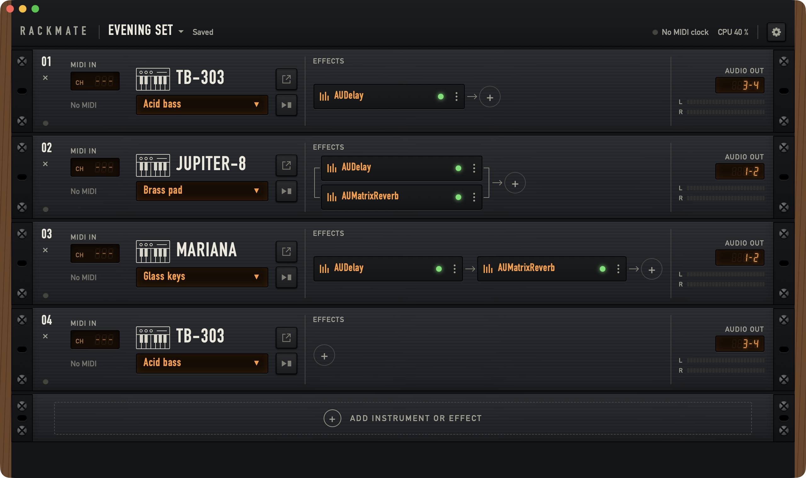

Your plugins as instruments in the studio. Rackmate makes the Mac one more instrument in a dawless setup: start it, load a rack and play, without opening a DAW.

What it does
Load and play
The app opens on your saved racks. Pick one and its plugins load with their sounds and routing. A rack always opens: a missing plugin or device shows on its own channel in red, and the other channels play.
A rack of channels
Each channel is one rack unit, with an instrument plugin or a standalone effect, its own MIDI input, audio output and effects. Green lamps show what is on, amber displays show the routes and sounds.
Routing that follows the plugin
A channel shows only the inputs its plugin can use: MIDI in, Audio in, Sidechain in. Click a display to change its route. New channels take their routing from position tables you set once, so one plugin on your usual outputs takes a few letters and Return.
Effects you can rearrange
Effects run in series, or up to three together in parallel. Switch one off and it stays loaded. Drag one beside another for series, onto another for parallel, or into another channel. It keeps its sound.
Part of the studio
A standalone effect takes a hardware synth from an audio input and sends it to an audio output. Plugins get the tempo from the MIDI clock source you pick, and a key on each one decides whether its internal sequencer also starts and stops with that clock.
Named presets
Save a plugin's sound under a name and use it in every rack. Plugins that list factory presets as Audio Units show them next to yours.
What it needs
- macOS 15 or later, on Apple silicon.
- Audio Units. VST and VST3 plugins are not hosted.
- An audio device with outputs. With more outputs, each plugin can have its own channels on your mixer.
What it leaves out
Rackmate is a host, not a DAW. It has no faders or panning, no recording, sequencing or arranging, and no MIDI learn yet. Levels are set on your mixer and in the plugins. The manual lists the limits of this version.
Download
The disk image is signed and notarized by Apple, so it opens without security warnings. Drag Rackmate to Applications. Plugins are not included; the app hosts the Audio Units already on your Mac.
Release notes and earlier versions
Rackmate used to be called Pluginarium. An installed copy does not update to Rackmate, so install it from here. Your racks come along.
Build from source
You need the Xcode command line tools with Swift 6; no Xcode project is involved.
git clone https://github.com/jiripisa/rackmate.git
cd rackmate
./run.sh